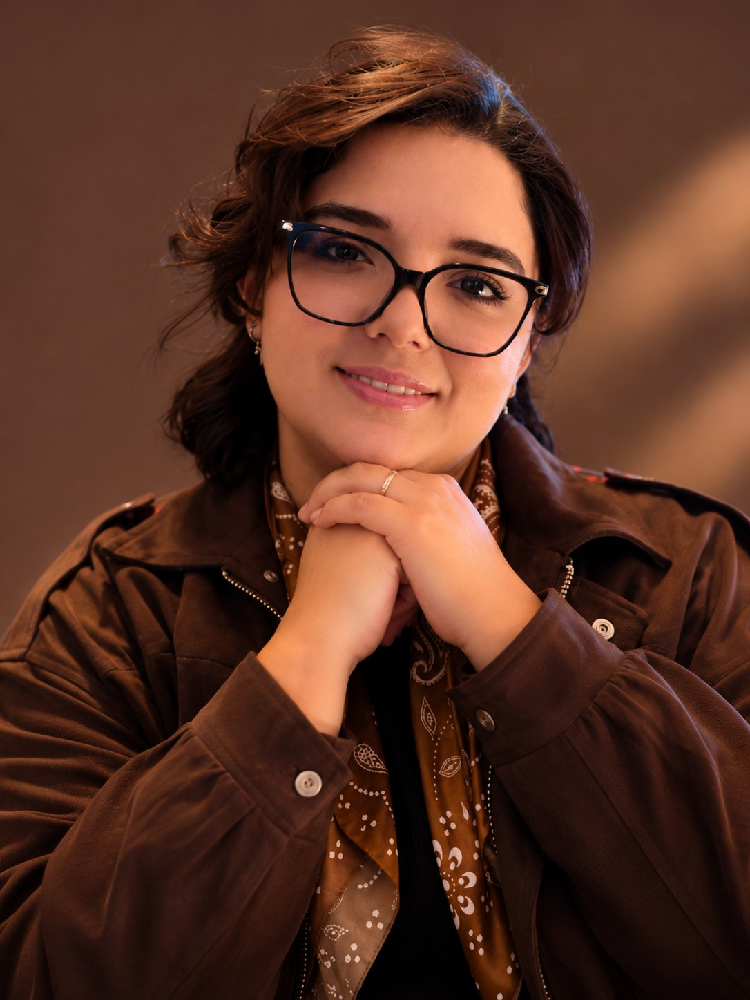
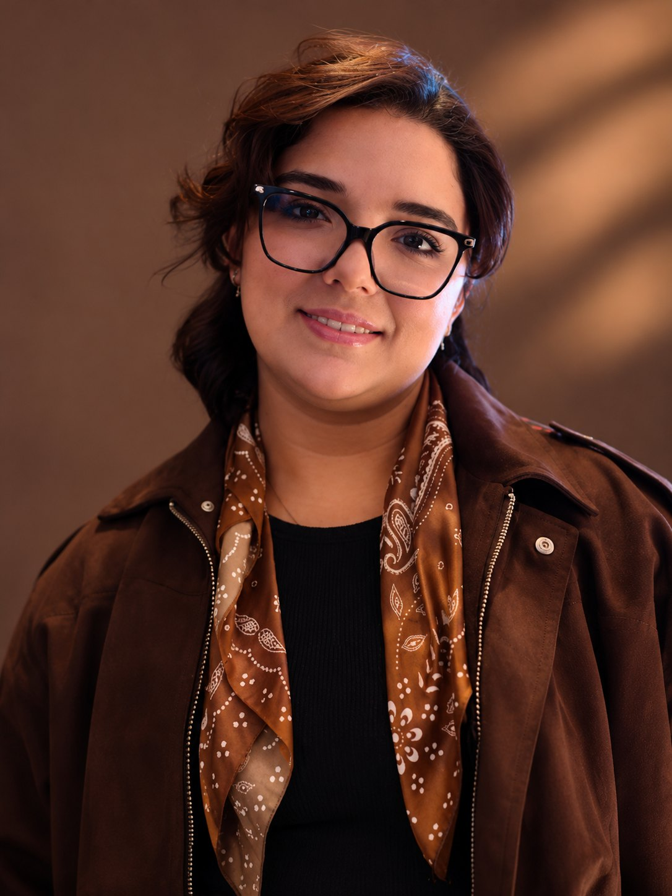
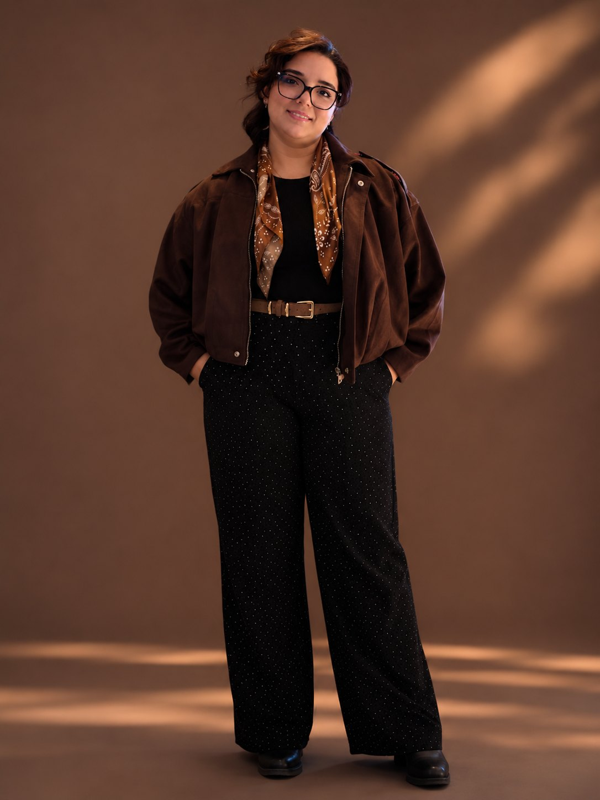

← Nossa equipe← Notre équipe← Our team

RedaçãoRédactionNewsroom
Gabryella Alves é secretária e assistente da The Crossing Time. É ela quem organiza o dia a dia da redação: acompanha a caixa de e-mail, prepara as imagens das matérias, monta os cards e os textos dos posts e ajuda na newsletter da revista no LinkedIn.
Gabryella Alves est secrétaire et assistante de The Crossing Time. C’est elle qui organise le quotidien de la rédaction : elle suit la boîte mail, prépare les images des articles, monte les visuels et les textes des publications et participe à la newsletter de la revue sur LinkedIn.
Gabryella Alves is The Crossing Time’s secretary and assistant. She organises the newsroom’s daily routine: following the mailbox, preparing the images for the articles, building the post visuals and texts and helping with the magazine’s LinkedIn newsletter.
Estudante e apaixonada por comunicação, cresce com a revista e aprende, na prática, o trabalho de uma redação bilíngue.
Étudiante et passionnée de communication, elle grandit avec la revue et apprend, sur le terrain, le travail d’une rédaction bilingue.
A student with a passion for communication, she is growing with the magazine and learning, hands on, how a bilingual newsroom works.

